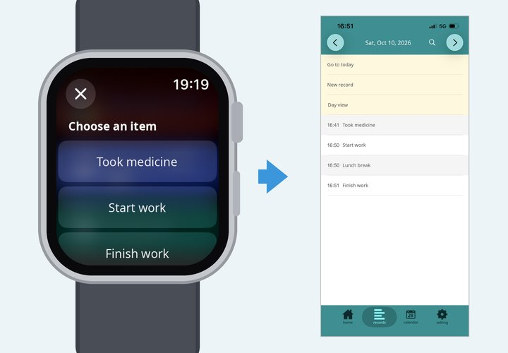
You can log a record right from your Apple Watch without taking out your iPhone.
The record keeps the time you logged it on the watch, and you can import all records into the TimeStamp app on your iPhone later.
Recommended while exercising, when your hands are busy with housework or childcare, or if you don't always carry your iPhone.
Run a shortcut on your Apple Watch and choose an item from your list (or enter a memo). The date, time and memo are saved one by one to the "Time Record" list in the Reminders app.
Run the "Import Records" shortcut on your iPhone. The items in the "Time Record" list are imported into the TimeStamp app.
Imported reminders are deleted from the "Time Record" list automatically, so the same record is never imported twice.
* The record time is the time you logged it on the watch, not the time you imported it.
There are two shortcuts for recording on the watch. We recommend "Record from List", which records with just a tap. You can also install both and use them as you like.
Pick from a list: "Record from List"Recommended
Prepare a list of items you often record, such as "Took medicine" or "Start work", and just tap one on your watch. No typing needed, so it is great when you can't speak out loud or want to record quickly.
See how to use it
Free input: "Time Memo"
Enter any memo on the spot by voice (dictation) or handwriting. Good for recording many different things.
See how to use it
* Whichever you use, importing on the iPhone works the same way.
Use the Reminders app on your iPhone.
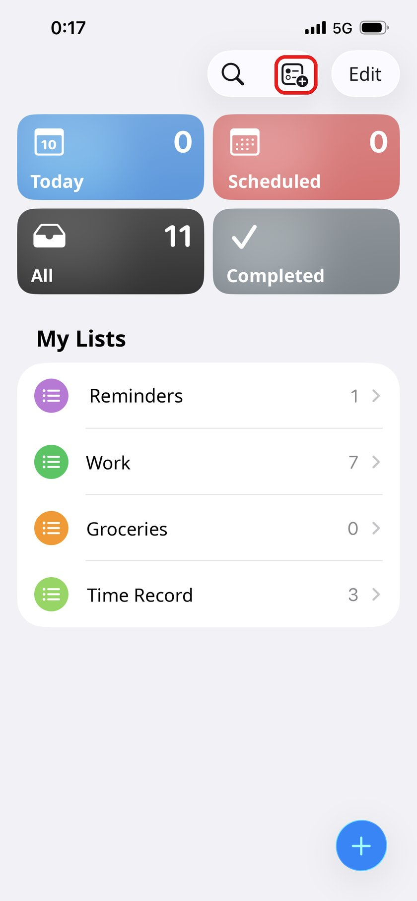
Open the Reminders app and tap the "Add List" icon at the top right.
* The + button at the bottom right adds a reminder, so don't use it here.
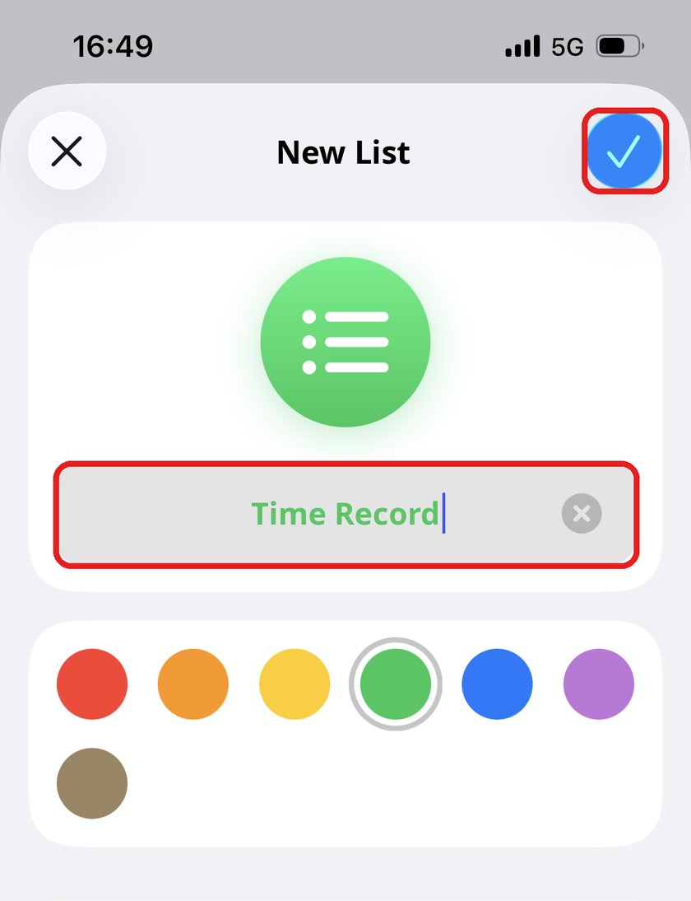
1. Enter "Time Record" as the list name.
2. Tap the check button at the top right.
* Enter the list name exactly as "Time Record". The shortcuts won't work if the name is different.
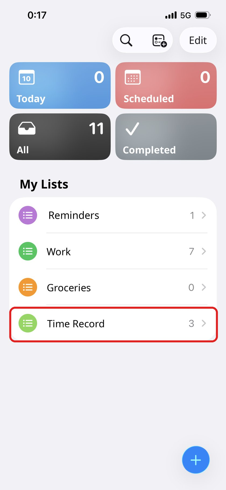
When "Time Record" appears in My Lists, you're ready.
Get a shortcut for recording on the watch ("Record from List" is recommended; you can get both) and the shortcut for importing on the iPhone.
Shortcut for recording on Apple Watch (either one, or both)
Pick from a list: "Record from List"
Get shortcut from here (tap twice)Free input: "Time Memo"
Get shortcut from here (tap twice)Shortcut for importing on iPhone: "Import Records"
Get shortcut from here (tap twice)If you are asked for permission to access Reminders the first time you run a shortcut, tap "Allow".
First, customize the list items on your iPhone.
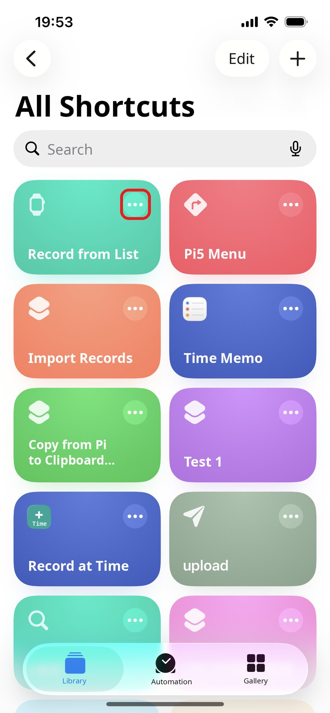
In the Shortcuts app on your iPhone, tap "•••" on "Record from List" to open the editor.
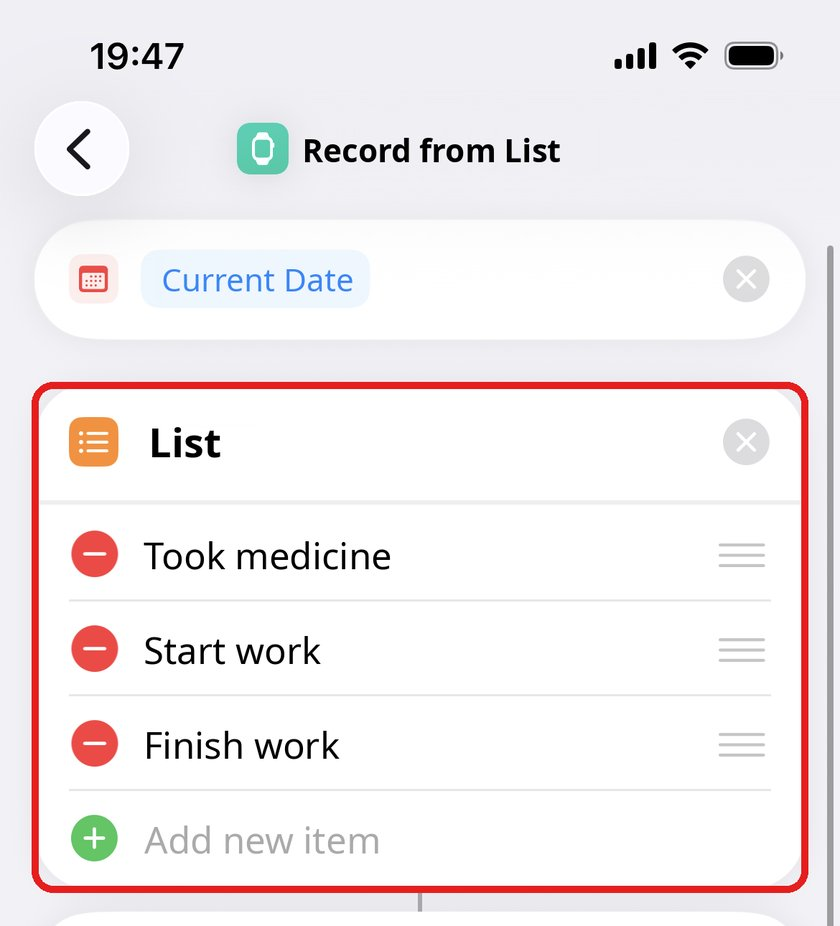
Change the items in "List" to things you often record. It starts with "Took medicine", "Start work" and "Finish work". Use "Add new item" or the − button to add or remove items.
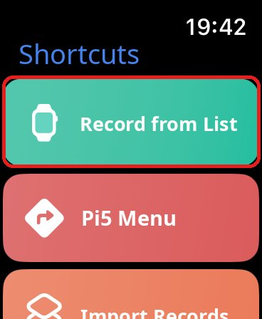
On your Apple Watch, open the Shortcuts app and tap "Record from List".
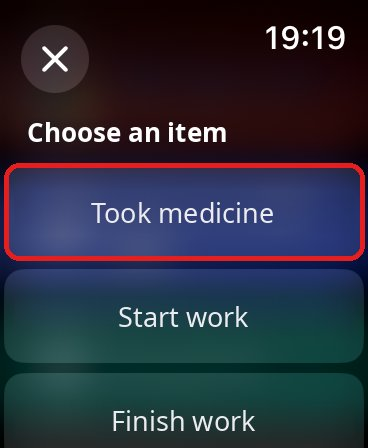
Your list appears. Tap the item you want to record. When the watch vibrates, the record is saved.
* Turn the Digital Crown or swipe to see more items.
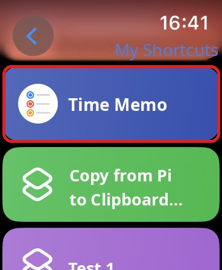
On your Apple Watch, open the Shortcuts app and tap "Time Memo".
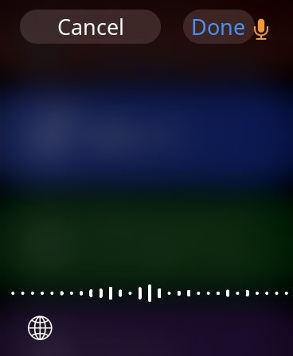
The input screen appears. Speak (dictation), or tap the globe button to write by hand, to enter your memo.
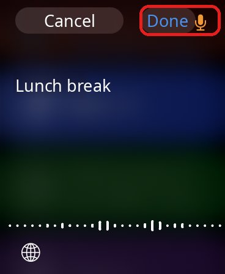
When you have entered your memo, tap "Done" at the top right. The record is saved.
Put a shortcut on your watch face to start recording even faster.
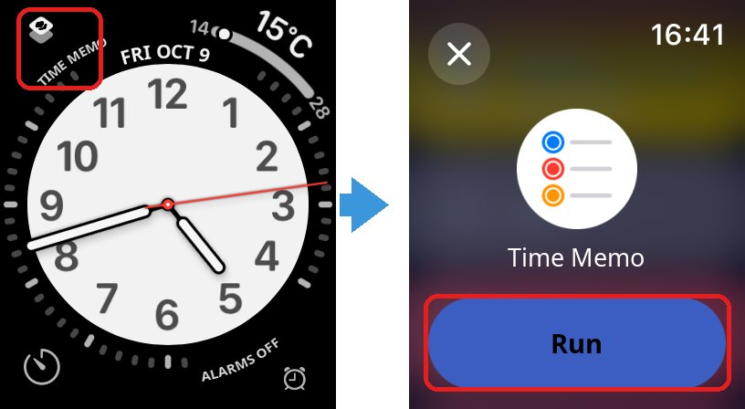
* Tap the shortcut on the watch face (for example "Time Memo"), then tap "Run". To add it: touch and hold the watch face → "Edit" → choose a complication → "Shortcuts" → select the shortcut. "Record from List" can be added the same way.
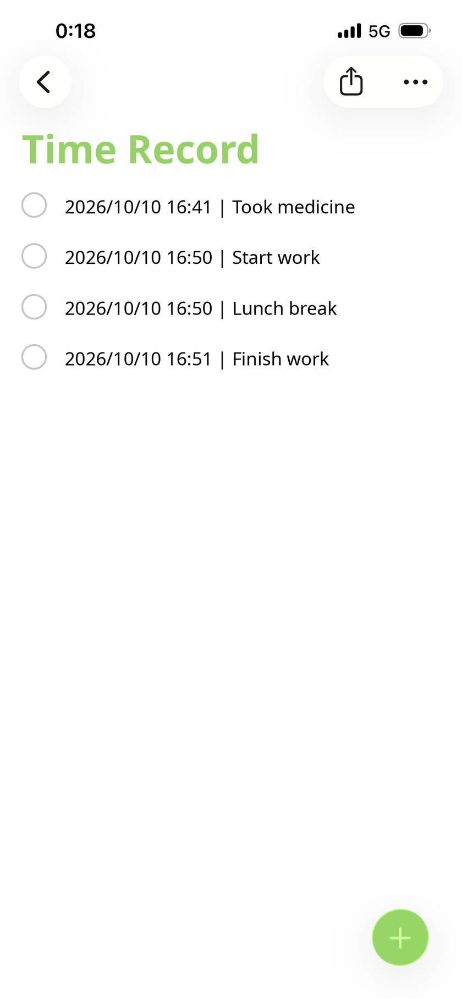
Records from your watch are listed in the "Time Record" list in Reminders as "date time | memo". (You don't need to edit them.)
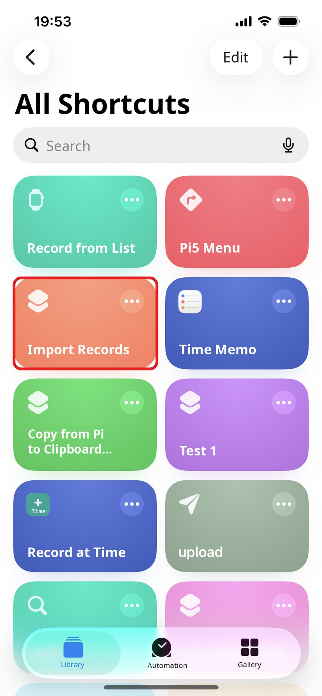
In the Shortcuts app on your iPhone, tap "Import Records".
* When there are several records, the TimeStamp app opens and closes several times because records are imported one by one. This is normal. Please wait until the vibration tells you the import is complete.
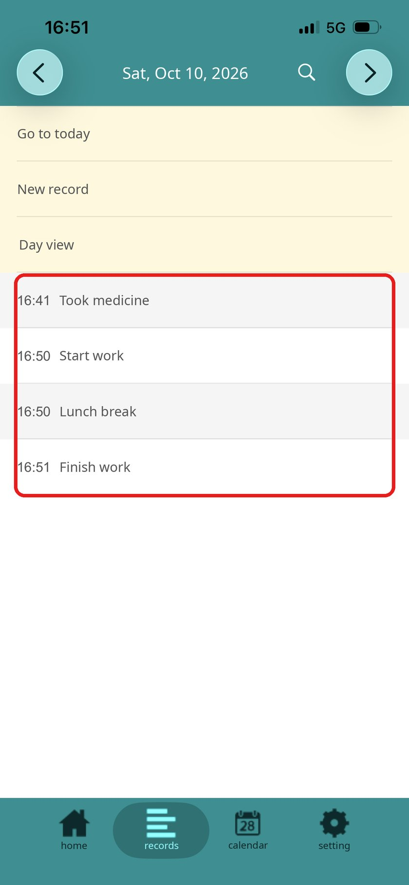
Open "records" in the TimeStamp app. The records are added with the times you logged them on the watch.
Imported reminders are deleted from the "Time Record" list.
Import at a set time every day so you never forget.
Create a time-of-day automation as in steps 1–5 of Reminder Notifications, and choose "Run Shortcut" → "Import Records" as the action.
The shortcut doesn't appear on my watch
In the Shortcuts app on your iPhone, tap "•••" on the shortcut you use on the watch ("Record from List" or "Time Memo"), open details (i), and turn on "Show on Apple Watch".
I want to rename the list / I entered the wrong name
Rename the Reminders list back to "Time Record". If you want to use a different name, change the Reminders list name in both the watch shortcut and "Import Records".
I want to change the list items
Edit "Record from List" in the Shortcuts app on your iPhone and change the list items. The change is reflected on your watch too.
The imported reminders disappeared
Imported reminders are deleted automatically to prevent duplicate imports. Your records remain in the TimeStamp app.